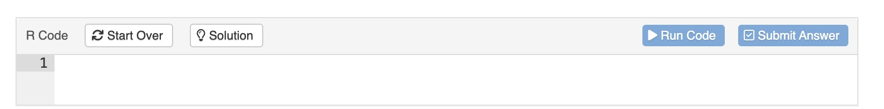
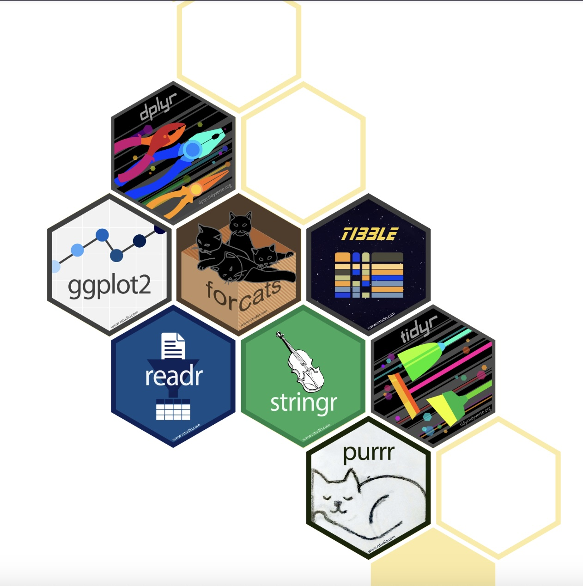

Introduction
Welcome BWD Summit 2024!
Pre-Survey WorkShop Intake Form
If everyone can scan this QR code and fill out the survey

Tutorial Overview
This tutorial will introduce you to the fundamentals of R language and the Tidyverse, a powerful collection of R packages for data manipulation and visualization.
Participants will gain hands-on experience selecting and filtering data, creating new variables, and visualizing trends in the dataset. By the end of the session, they will have built several visualizations, including bar plots and line graphs, highlighting the contributions of Black women artists featured in art history textbooks.
You don’t need to know anything about R before you begin. The tutorial is designed to be the ideal starting place for new R users.
Objectives:
Teach the basics of running R code.
Introduce the tidyverse, focusing on
dplyrfor data manipulation.Demonstrate how to create visualizations using
ggplot2.Explore the representation of Black women artists using the
worksgardnerdataset.
Agenda
Welcome to R:
What is R? (30 minutes)
Write and run R code
Run functions on values
Save values as objects to use later with
<-Chain functions together with
|>The basics of R packages
Introduction to the Tidyverse:
Data Manipulation with dplyr (30 minutes)
Selecting columns with
select().Filtering rows with
filter().Arranging data with
arrange().Creating new columns with
mutate().
Data Visualization with ggplot2 (30 minutes)
Creating basic visualizations.
Customizing plots.
Visualizing trends in the data.
Highlighting Black women artists.
Logistics
Before we begin
Throughout this tutorial, you will see code exercises that look like this:

When you click Run Code, the box will send what you wrote to an R interpreter. That’s a program that can read and run R code. The interpreter will print the result of your code below the box.
When you click Submit Answer, it will provide feedback on your code. There is no answer being submitted, and I am not grading your submission. Submit Answer is a way to learn new things, like how to fix your code when it is not working
When you click Solution, it will give you the answer - as tempting as it may be - try to figure it out first before clicking on it.
Welcome to R
What is R?
R is a powerful and flexible programming language and software environment specifically designed for statistical computing and data analysis.R is open-source, meaning that it is free to use and has a large community contributing to its ongoing development.
How to Install R?
To get started with R, follow these steps to install it on your computer:
Download R:Visit the Comprehensive R Archive Network (CRAN): https://cran.r-project.org/. Choose your operating system (Windows, MacOS, or Linux) and download the appropriate installer.
Install R: Run the downloaded installer and follow the installation instructions.
Install RStudio on your desktop using the following link: https://posit.co/download/rstudio-desktop/
Once R is installed, you can start using it to run analyses and visualizations. R has a wide variety of packages available to extend its functionality. Here’s how to install and load some basic R packages:
The basics of R packages
Installing Packages:
To install a package in R, use the install.packages()
function.
For example, you can install the ggplot2 package for data visualization and the dplyr package for data manipulation:
install.packages("ggplot2")
install.packages("dplyr")
- The packages needed for this tutorial has already been installed.
Loading Packages:
After a package is installed, you need to load it into your R session using the library() function. This needs to be done each time you start a new session and want to use the package:
Example
library(ggplot2)
library(dplyr) Conclusion: With R installed and basic packages loaded, you’re ready to start performing data analysis and visualizations. R offers extensive resources and community support, making it a great choice for anyone looking to work in data science or statistics. Happy coding!
Write and run R code
## [1] "Jimmy - can you go back and add %>%, ?, <- and |>, and then talk about what a data frame/tibble is."Now Let’s try a simple exercise of creating a school data frame using a tibble format A Tibble is a data frame that is part of the tidyverse library.
#We want to create a data frame to keep track of:
#The teachers at Grove Middle School
#The number of students in their classrooms
#The grade levels of the students
#We begin by loading the tibble package which contains tibble(). Next we input our data into tibble(). Our tibble will have the column names teacher, class_size, and grade with the values provided below.
library(tibble)
tibble(
teacher = c("Gaines", "Johnson", "Hernandez"),
class_size = c(30, 26, 28),
grade = c(6, 7, 8)
)
## # A tibble: 3 × 3
## teacher class_size grade
## <chr> <dbl> <dbl>
## 1 Gaines 30 6
## 2 Johnson 26 7
## 3 Hernandez 28 8
#After checking out the created tibble, we realize it would be a good idea to include the school name in the data frame in case we decide to include other schools in the future. If we pass only a single value to this column, R will use its recycling rules to reuse that value for each row in the tibble.
tibble(
teacher = c("Gaines", "Johnson", "Hernandez"),
class_size = c(30, 26, 28),
grade = c(6, 7, 8),
school = "Grove MS"
)
## # A tibble: 3 × 4
## teacher class_size grade school
## <chr> <dbl> <dbl> <chr>
## 1 Gaines 30 6 Grove MS
## 2 Johnson 26 7 Grove MS
## 3 Hernandez 28 8 Grove MS
#Lastly, we assign the created tibble to the object, teachers, so we can access is later.
teachers <- tibble(
teacher = c("Gaines", "Johnson", "Hernandez"),
class_size = c(30, 26, 28),
grade = c(6, 7, 8),
school = "Grove MS"
)Congrats on your completing your into to R coding. Now lets dive into the Tidyverse World :)
Introduction to Tidyverse

Overview
The tidyverse is a collection of R
packages designed for data science. All packages share an
underlying design philosophy, grammar, and data structures. It includes
packages like ggplot2 for visualization, dplyr
(pronounced DEE-ply-er) for data manipulation,
and tidyr for data tidying.
As of tidyverse 2.0.0, the core tidyverse includes nine packages:
- ggplot2
- dplyr
- tidyr
- readr
- purrr
- tibble
- stringr
- forcats
- lubridate
Installation and use
Install all the packages in the tidyverse by running
install.packages("tidyverse").Run
library(tidyverse)to load the core tidyverse and make it available in your current R session.
Data transformation with dplyr

Now it’s time to explore your data and get some initial insight into the dataset.
You’ll be using four dplyr verbs to explore and tranform a dataset.
The four verbs are select(), filter(),
arrange() and mutate(), which do exactly what
they say.
By the end of this section, you’ll be comfortable using these verbs in various combinations.
Explore Data
Art history textbooks may be filled with art, but women artists frequently occupy less space. The insights we can gain from data are profound, revealing truths that often go unnoticed.
 |
“I paint what I am. I am a black woman, and I am proud of being a black woman.”- Faith Ringgold |
Source Data
We are going to take a look at the physical space each artwork is given across many editions of some of the most important art history textbooks.
Artists who are women have been historically underrepresented, both where art is displayed and where it is studied like textbooks, and this dataset lets us understand more about in what ways this is true.
The dataset used in this tutorial was created by Holland Stam for her excellent undergraduate thesis. Let’s start by reading in the data for one specific textbook, Gardner’s Art Through the Ages:
Can you load the arthistory package
below? I’ve already installed the package for us.
library(arthistory)Use the code box below to display
worksgardner.
worksgardner# explore the worksgardner artwork data
worksgardnerSelect Data
Select, rename, and reorder columns
This section will focus on dplyr’s select() function,
which lets us select columns from a table. You will:
- Narrow a data set to only the columns that interest you
- Use selection helpers to select columns more easily
- Rename and reorder columns
Select a subset of columns
Lets take a look at the same data set again, but this time lets run
glimpse().
glimpse(worksgardner)select()
Fill in the blank code below with select() to
select four columns from worksgardner.
worksgardner %>%
____(artist_name, artist_gender, artist_race, publication_year)# filter the data by "artist_race" that is "Black or African American"
worksgardner %>%
select(artist_name, artist_gender, artist_race, publication_year) Takeaway
You can use the
select()function from dplyr to subset columns from a data frame by name with the pattern:<DATA SET> %>% select(<COLUMN1>, <COLUMN2>)To select a column whose name looks like
- a number,
2012, - a mathematical expression,
A-1, - or two object names,
Art Work,
we need to wrap it in backticks when we refer to it in
select(). This prevents R from misinterpreting the column name, e.g.select(worksgardner, `Art Work`)- a number,
We can select columns in other ways as well. Consider the code below. What do you think it does?
worksgardner %>%
select(contains("artist")) contains() is one of several selection helpers that we
can use inside of select() to specify which columns to
select. Helper functions and operators make it easy to select many
columns at once.
Let’s try to find all columns that contains the word artist.
worksgardner %>%
select(contains("artist")) Takeaway
We use select() and its helper functions to subset
specific columns in a table in elegant ways. We can make smart
selections by mix-and-matching helper functions with each other and with
boolean operators. To learn more, visit the tidyselect helper
documentation.
| Selects | Example | |
|---|---|---|
| Selection helper | ||
- |
Every column except | select(worksgardner, -book) |
: |
Every column between (inclusive) | select(worksgardner, artist_name:artist_race) |
contains() |
Columns whose name contains a string | select(worksgardner, contains("artist")) |
starts_with() |
Columns whose name starts with a string | select(worksgardner, starts_with("a")) |
ends_with() |
Columns whose name ends with a string | select(worksgardner, ends_with("(book)")) |
matches() |
Columns whose name contains a string that matches a regular expression | select(worksgardner, matches("\d")) (i.e. match names containing a digit) |
last_col() |
Select last column, possibly with an offset | select(worksgardner, last_col()) select(worksgardner, last_col(offset = 2)) (selects the penultimate column) |
any_of() |
Columns whose names appear in the given set; does not check for missing columns | select(worksgardner, any_of(c("height", "total"))) |
all_of() |
Columns whose names appear in the given set; gives an error if any are missing | select(worksgardner, all_of(c("artist", "book"))) |
num_range() |
Columns whose name ends with a numerical suffix in the range (i.e. “x01”, “x02”, “x03”) | Not applicable with worksgardner |
| Boolean operator | ||
& |
And | select(worksgardner, starts_with("a") & -contains(" ")) |
| |
Or | select(worksgardner, ends_with("(book)") | ends_with("(t)")) |
! |
Opposite of | select(worksgardner, !ends_with("(book)") |
Combining helpers
Recall that you learned how to use boolean operators to write logical tests. To build very specific selection criteria, we can mix and match our selection helper functions with boolean operators.
and (
&)or (
|)opposite of (
!)excluding (
-)
Consider the code below.
worksgardner %>%
select(starts_with("artist") & -contains(" "))Rename columns
There’s another useful way to use select(). Run
the code and see.
worksgardner %>%
select(`Artist Name` = artist_name)rename()
If you only need to rename columns without subsetting them from the data set, it is preferable to use dplyr’s rename() function instead.
Run the code below which uses rename(). What is the difference between using rename() or select()?
worksgardner %>%
rename(`Artist Name` = artist_name)Relocate
relocate() is used to reorder columns in your data
frame. By default it puts whatever columns you list at the front of your
data set.
Let’s try to relocate artist_gender and artist_race as the first two columns in the window below.
worksgardner %>%
relocate('___','___')# relocate "artist_race" that is "Black or African American"
worksgardner %>%
relocate('artist_gender','artist_race')You can determine where to relocate the columns with the optional
arguments .before or .after.
worksgardner %>%
relocate(artist_gender,artist_race, .after = artist_name)Takeaway
- To select and rename columns in single step, use
select(<NEW NAME> = <OLD NAME>) - To rename existing columns without dropping the rest of the columns
in the data set, use
rename(<NEW NAME> = <OLD NAME>) - To reorder columns use
relocate(). Use the arguments.beforeor.afterto specify where columns should be relocated.
Filter Data
Filter rows from a table
In this section you will subset rows from a data set. Specifically, you will learn how to:
Subset a table to just the rows that interest you with
filter()Write logical tests within
filter()to determine which rows to returnCombine multiple tests into a single filter with Boolean operators
Learn to work with missing values when filtering
Let’s say that you wanted to choose a particular set of observations, i.e. - those for which the “artist_race” was ‘Black or African American’. dplyr allows us to do intuitively and in a language that mirrors how you think and talk about data.
You can use filter() from the dplyr package to return
only rows where artist_race corresponds to “Black or African
American”.
Fill in the blank with filter() below.
# filter the data by "artist_race" that is "Black or African American"
worksgardner %>%
___(artist_race == "Black or African American")# filter the data by "artist_race" that is "Black or African American"
worksgardner %>%
filter(artist_race == "Black or African American") Using filter()
filter() needs two things to do its job:
worksgardner %>%
filter(artist_race == “Black or African American)
A data set to filter (this is often supplied by the forward-pipe operator, but it doesn’t have to be).
A logical test to use as filtering criteria. Within that test, we can refer to columns in the data set by name.
filter() will return every row in the data set where the
result of the logical test is TRUE.
Try it below. Use filter() to find the rows in
worksgardner where the artist_gender is a
Female.
# filter the data by "artist_race" that is "Black or African American"
worksgardner %>%
filter(artist_gender == "Female") Takeaway
You can use filter() to find and return specific rows
from a data frame, with the following syntax:
filter(<DATA SET>, <LOGICAL TEST>)Using dplyr functions does not modify the original data set. To save your results, you must assign your table to a new R object.
Avoid common mistakes when writing logical tests with
filter():Do not use
=instead of==to test for equalityDo not forget to surround strings with quotation marks. Write
artist_gender == "Female", instead ofartist_gender == Female.
Like all dplyr functions, you don’t have to use the forward-pipe operator to supply the first argument:
filter(worksgardner, artist_gender == "Female")Arrange Data
Arranging data with arrange()
What year did black women artwork get featured in the Gardner textbook?
We can use the arrange() function from the dplyr package
to find out. Run the code below.
worksgardner %>%
filter(artist_gender == "Female", artist_race == "Black or African American") %>%
arrange(publication_year)desc()
To arrange rows from highest value to lowest (descending
order), surround a column name with desc(). Like
arrange(), desc() comes with the dplyr
package.
For example, which countries had the highest
gdpPercap in 2020?
We can use arrange() and desc() to sort any
type of column in R. For example, we can sort a character column.
arrange() and desc() will sort the column in
alphabetical order. desc() will change this to reverse
alphabetical order.
Use arrange() and desc() to create
this table.
Takeaways
Use desc() inside arrange() to arrange by a
variable in descending order. For example, the following code would
arrange worksgardner by descending
publication_year:
worksgardner %>%
arrange(desc(publication_year))Mutate Data
Create new columns
In this lesson you will create and modify the columns in a table
using the mutate() function from the dplyr package.
mutate() is one of the most useful functions to have in
your data science toolkit.
Specifically, you will learn how to:
Add new columns
Update existing columns
Add a new column
Consider a small data set I’ve prepared called
penguins_sample. It has four columns.
We want to add a fifth column called researcher that
displays the last name of the person who collected each measurement. The
last names are stored in the following vector:
We can use dplyr’s mutate() function to add new columns.
Try it—fill in the blank with mutate() to add the
researcher column.
worksgardner_sample %>%
____(researcher = artist_lastnames)Syntax
Whenever we use mutate(), we follow a specific pattern
to create a new column:
<data set> %>%
mutate(<new_column> = <contents of new column>)We supply:
data set: the name of the data set you are starting with is always the first argument of
mutate(). This is often supplied using the forward-pipe operator.name of the new column: this is
researcherin the previous example.contents of the new column: this is the vector
lastnamesin our example. It contains one value for each row inpenguins_sample, and the values are ordered in the same order as the rows inpenguins_sample.
Here is our code again:
lastnames <- c("Gorman", "Williams", "Gorman", "Williams", "Fraser")
penguins_sample %>%
mutate(researcher = lastnames) You can also use
You can also use
mutate() without the forward pipe operator:
mutate(<data set>, <new_column> = <contents of new column>)Add a new column called body_mass_kg to the data
set penguins_sample. The new column should contain the
values in the vector kilograms, shown below:
kilograms <- c(4.85, 3.20, 4.90, 3.45, 3.85)If we’d like to retain a copy of mutate()’s output to
use later, we should save the output as an object.
Save the results of the call below to a new tibble called
penguins_sample_kg using R’s assignment operator
<-.
penguins_sample %>% mutate(body_mass_kg = kilograms)
We can use vectorized operations within mutate() to
generate values for the new column on the spot. Here’s an example, with
a larger data set called worksgardner_page_size.
#worksgardner_page_sizeLet’s create a new column named body_mass_kg that takes
the values in the body_mass column and converts them to
kilograms. Complete the mutate() call below by
filling in the blank with body_mass / 1000. Your
results will be saved in a new table, penguins_kg.
Some common vectorized functions to include with
mutate() include:
| Purpose | Example Usage | |
|---|---|---|
| Operators | ||
+ - *
/ ^ |
Common mathematical operations | flipper_length / 100 |
%/% %% |
Integer division or remainder of division | |
< <= >
>= != == |
Logical operators compare values in columns and return
a vector of TRUE or FALSE values |
body_mass >= 4000 |
| Numerical Functions | ||
round() |
Rounds the number to the specified number of
digits. |
|
abs() sign() |
Absolute value or the sign of a vector of numbers | abs(flipper_length) |
sqrt() |
Compute the square root | sqrt(flipper_length) |
log() log2()
log10() |
Compute the logarithm with a natural base, base 2 or base 10. | log10(body_mass) |
The data set dominick_oatmeal_ contains the variables
profit and move.
profit : profit per unit
move : number of units sold
# A tibble: 1,000 × 4
week product profit move
<date> <chr> <dbl> <int>
1 1991-04-07 COCO WHEATS 0.31 1
2 1991-04-07 CREAM OF WHEAT INSTA 0.25 2
3 1991-04-07 CREAM OF WHEAT QUICK 0.26 4
4 1991-04-07 INST CRM OF WHTVARI 0.21 2
5 1991-04-07 KRETCHMER HONEY WHT 0.16 4
6 1991-04-07 KRETSCHMER WHEAT GER 0.18 8
7 1991-04-07 MIX N EAT BROWN SUG 0.19 1
8 1991-04-07 MIX N EAT CREAM OF W 0.25 2
9 1991-04-07 NABISCO CREAM OF RIC 0.19 3
10 1991-04-07 NABISCO CREAM OF WHT 0.22 2
# … with 990 more rowsUse the mutate function to add a new column
called, earnings that contains the total profit
from the amount of product sold each week.
To calculate earnings, multiply profit by
move.
Update an existing column
The base R function toupper() is a vectorized function
that will translate characters from lowercase to uppercase. Use
toupper() on the existing species column to
create a new column also named species.
Create multiple columns
You can create and/or update multiple columns in a single
mutate() call. Try it.
The window below contains code from a previous exercise (spread over
multiple lines for readability). Add on to the
mutate() call in the blanks below to create the following
new columns:
avg_mass_kg, which displays the mean body mass in kilogramsmass_kg_centered, which computes the difference betweenbody_mass_kgandavg_mass_kg.
|
# mutated_data <- data %>%
#mutate(new_column = existing_column \* 2)
#head(mutated_data) Visualization with ggplot2
Visualization is a powerful tool for understanding and exploring your data. Today, you’ll learn the basics of visualizing data using one of R’s visualization packages, ggplot2.
Along the way, you’ll learn how to:
Visualize data in a scatter plot
Create a variety of types of plots, including bar plots and histograms
Layer multiple plot types
Create a canvas
Every plot you create with ggplot2 will involve the function
ggplot(). When we run ggplot() without any
arguments, it initializes a blank canvas for a plot. The result is just
an empty, gray square! Run the following code to generate a
blank plot.
ggplot()Visualize vectors
The function ggplot() initializes a plot. Without any
arguments, ggplot() has nothing to visualize, so the plot
is blank. We’ll need to add some arguments if we actually want to plot
data.
We want to plot the data in a and b, which
are vectors of numbers.
## [1] 0.8281164 19.3468099 20.5128979 2.7773897 15.2596060 2.6916362
## [7] 12.3305388 6.3360774 3.5271746 5.6048248## [1] -0.2967839 18.4725063 20.5567595 2.1934146 14.4363074 2.8022290
## [7] 12.6952666 6.3897784 4.8958470 5.2243675To add a and b to our plot, we’ll need the
function aes(). Fill in the following code to map
a to the x-axis and b to the y.
ggplot(mapping = aes(x = ____, y = ____))ggplot(mapping = aes(x = a, y = b))Visualize data frames
Until now, we’ve been plotting data in two vectors, a
and b. However, it’s more common to plot data that lives in
a data frame, like worksgardner_sample:
To do so, we’ll need ggplot()’s data
argument.
Fill in the following code to make a scatter plot of two
worksgardner_sample variables:
publication_year and
number_of_artworks.
ggplot(data = ____, mapping = aes(x = publication_year, y = number_of_artworks)) +
geom_point()ggplot(data = worksgardner_sample, mapping = aes(x = publication_year, y = number_of_artworks)) +
geom_point()Takeaway
Until now, our template for creating plots has been:
ggplot(data = <DATA>, mapping = aes(x = <VARIABLE>, y = <VARIABLE>)) +
geom_point()Now, you understand that the the geom function doesn’t have to be
geom_point(), so we can revise our template to something
more general:
Changing the geom_() function changes the type of
plot.
Here’s a table of common geom functions:
| Geom | Creates | Notes |
|---|---|---|
geom_bar() |
Bars | Only needs x |
geom_boxplot() |
Boxplots | |
geom_col() |
Columns | |
geom_hex() |
Hexagonal heatmap | |
geom_histogram() |
Histogram | Only needs x |
geom_line() |
Lines | |
geom_point() |
Points | |
geom_smooth() |
Smooth line |
Hands-On Exercises
Now it’s your turn! Use the worksgardner datasets from the arthistory package or use one of the other datasets that is in the package, or create your own data frame with custom data to create your own visualizations. Experiment with different types of plots and customization options.
Exercise 1: Create Your Own Bar Chart
# Create a bar chart using your own data and customization
# Try Running either of the following examples to get started.
worksgardner %>%
count(publication_year, artist_gender) %>%
ggplot(aes(publication_year, n, fill = artist_gender)) +
geom_col() +
labs(x = NULL, y = "Number of works", fill = NULL)
# Advanced way to breakout a bar chart:
ggplot(data = worksgardner) +
geom_bar(aes(x = as.factor(publication_year), fill = artist_gender), position = "dodge") +
labs(title = "Artworks by Publication Year, Artist Gender, and Artist Race",
x = "Publication Year",
y = "Number of Artworks") +
theme_minimal() +
theme(axis.text.x = element_text(angle = 45, hjust = 1)) +
facet_wrap(~artist_race)Exercise 2: Create Your Own Box Plot
# Create a box plot using your own data and customization Exercise 3: Create Your Own Scatter Plot
#Create a scatter plot using your own data and customization Additional Resources
RStudio IDE is an Integrated Development Environment (IDE) for R.